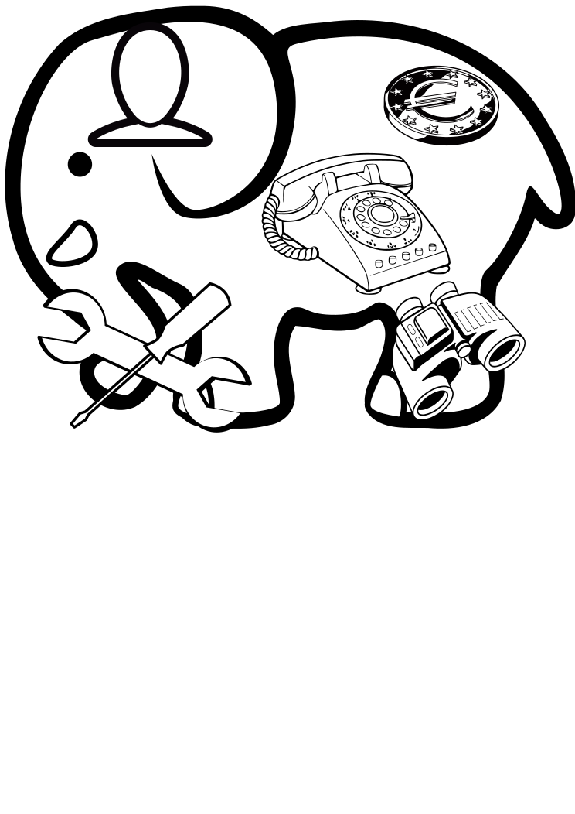
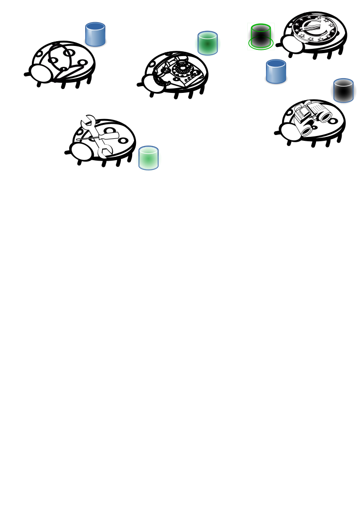
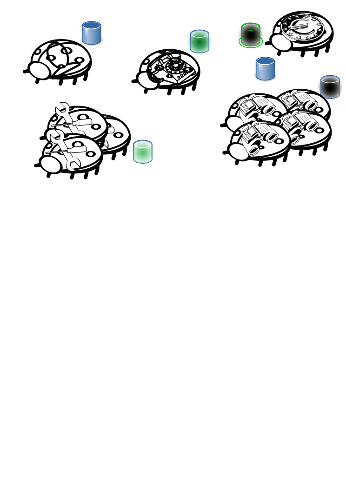
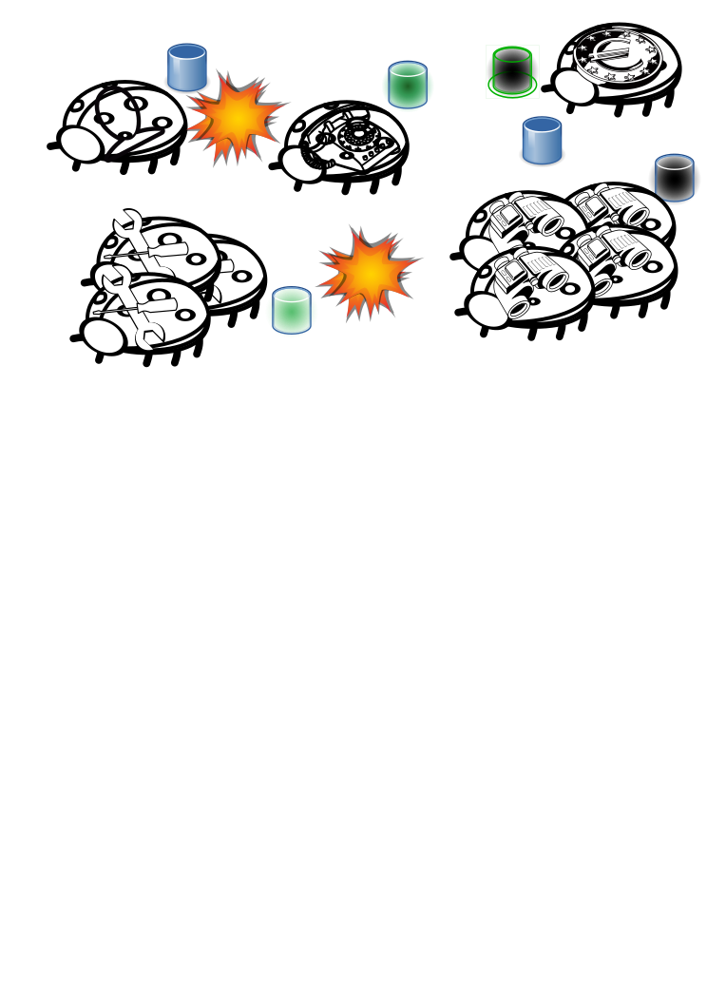
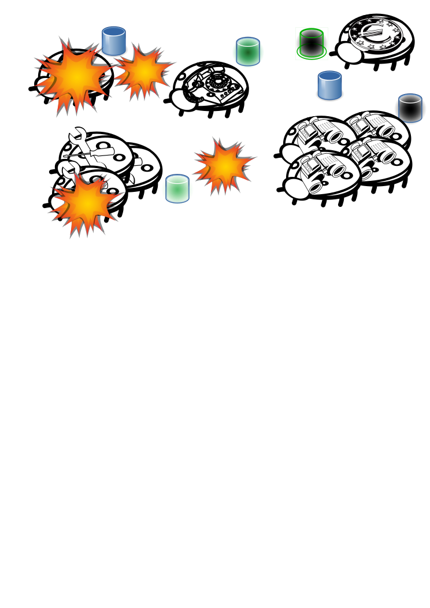
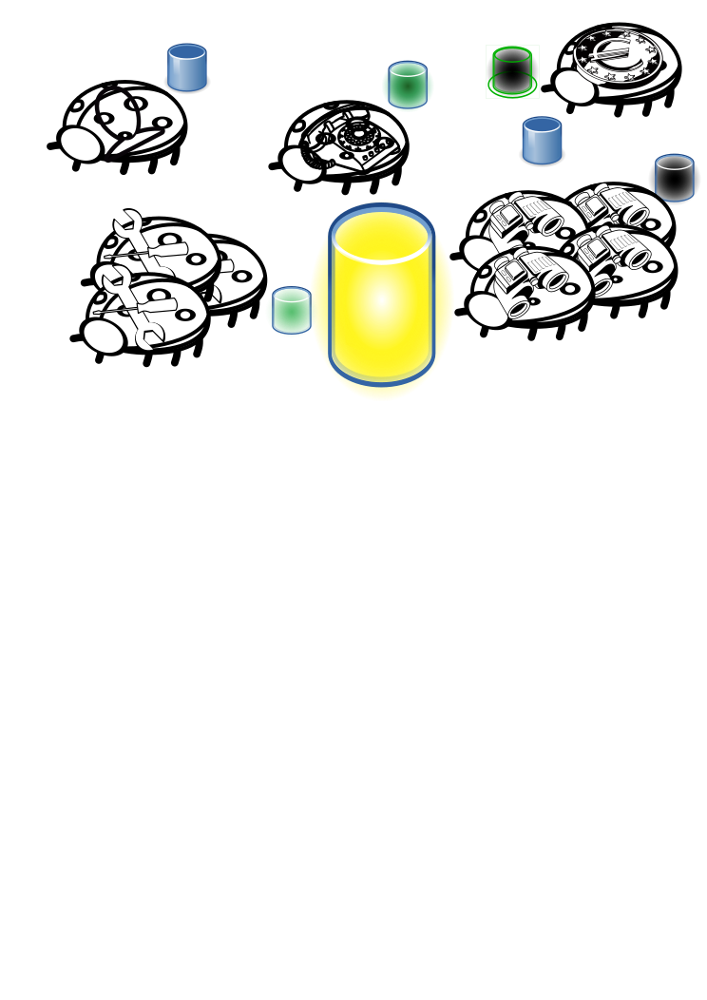
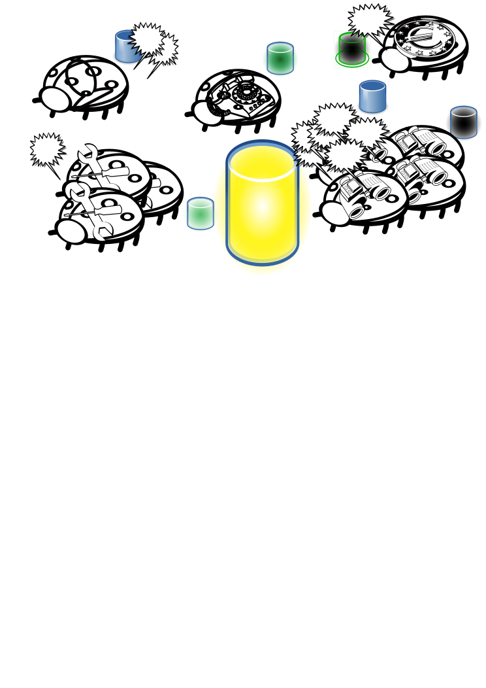

Why is our tech
by Abby Henríquez Tejera
Why is our tech so
by Abby Henríquez Tejera
let's start with a story...
let's start with a story
...
we're introducing now yaco
let's start with a story
cayo
chapter 1: the beginnings of cayo
At the beginning:
All good
Dev super fast
Everything super simple
super small team builds everything (BE, FE, servers...)
simple :)
easy monitoring and logging
As time passes, they ended up with a big monolith that
did a lot together.
user tracking & behaviour analysis

external communications / third party services
(c 1.1) lots of users!
users are cool :D
but web page goes slowly :(
scalability
many versions of the system: cool!
scalability shitty: we scale for the maximum module
but we can only have one DB :S
which easily breaks
not easy to solv
*plus*
difficult development
spaghetti code
difficult architecture - adding new stuff
difficult deployment, too big... and if everything fails, pffff
problems with one component implies everything fails
chapter 2: the evolution of cayo
microservices
zalando
soundcloud
google!
amazon
...
nothing can fail!
different applications (services) and servers

they can have their own dbs
(c 2.1) lots of users!
users are cool :D
but web page goes slowly :(

scale independently
looks great!
better architecture: everything really separated (no spaghetti, small projects)
organizationally allows more flexibility
allows more (and better tech)
reusability
more detailed monitoring and logging
isolation CI/CD
devops!!!
better QA
flexible & easy to extend

bad network is bad
every network is bad
latency
everything is slower... or even doesn't work

resilience (total problems for some services or more) & fault tolerance
one service down doesn't have to mean everything fails
more problems with latency
consistency lost
more complicated (and advanced ops)
multiple dbs (source of truth?)
full testing difficult
but there is much more complexity (but each service less complex, ideally)
dependencies can still exist :( despite everything
chapter 3: the enlightment of cayo
reactive / event driven
(microservices)

event log
indirect communication
simpler design
latency is still there... but much easier to deal with

event sourcing
much more flexibility
more architectural options
the trade-offs are difficult, but there relies the nice parts of what we do
big issue: SPOF with event log - mitigation strategies exist
FP (Scala, Akka!, Elm, Swift...)
DevOps (Terraform, AWS, CI/CD, Docker...)
Data driven (Kafka/Kinesis, Spark...)
Agile & best practices (TDD, CRs, Kaizen...)
questions? ;)
elephant, ladybird, server, and binocular images from Pixabay, with CC0 CC